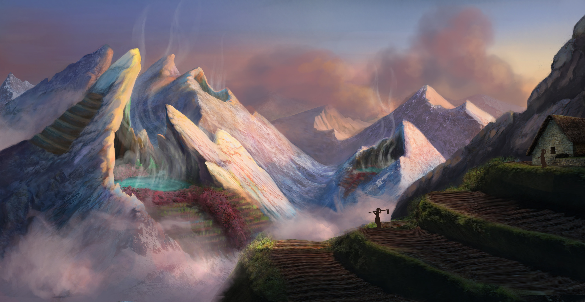
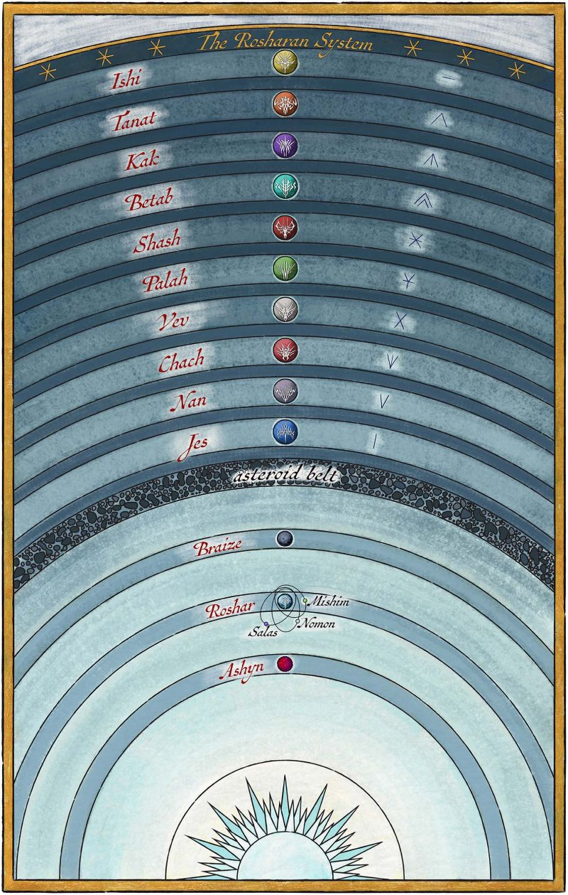
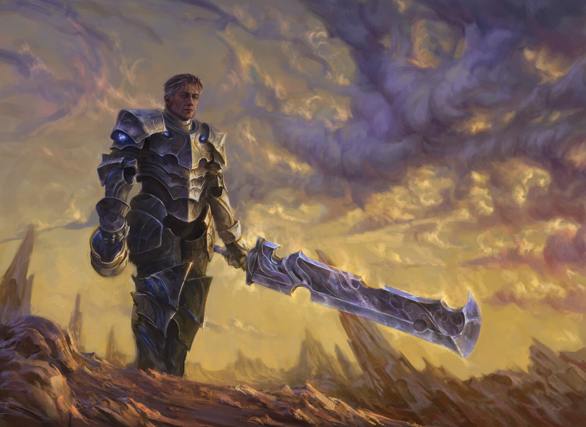
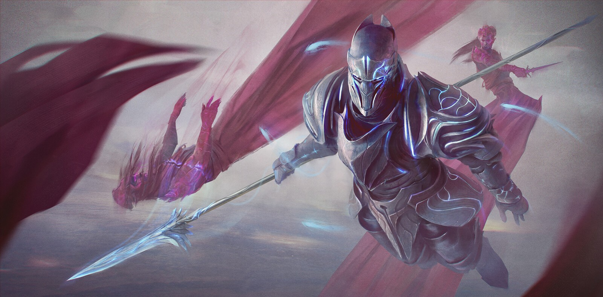
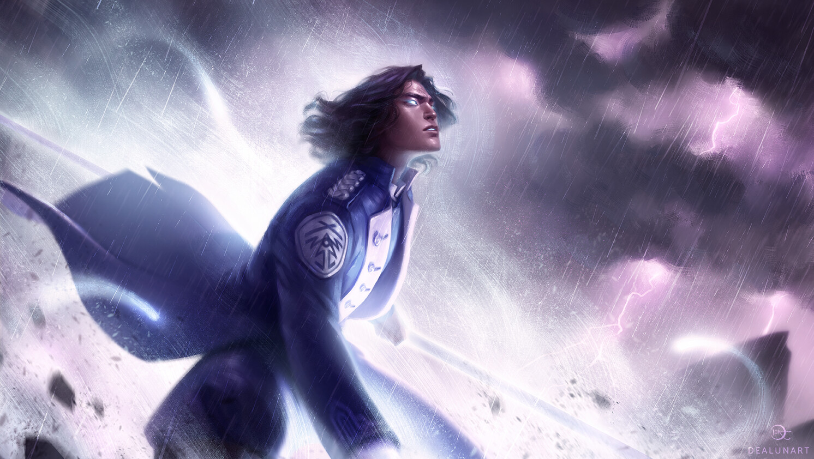

ROSHAR
A grand, large planet dominated by storms, home to a diverse and unique ecology consisting of things like megafauna, and most interestingly, a symbiotic relationships between living things and beings made of magic.
Roshar’s surface is mainly made up of rocky terrain and treacherous plateaus, where cities are carved into the stone to withstand the storms.

ROSHARAN SYSTEM
The Rosharan system is the name given to the planetary system containing the massive planet of Roshar. The system is also known as 'Greater Roshar'.
The system comprises thirteen planets, three of which are inhabited; Roshar, Ashyn, and Braize. The rest of the planets in the system are gas giants, divided by the asteroid belt.


INHABITANTS
Roshar’s inhabitants are varied adn many, evolved and shaped by a land stretched out with stone, storms, and magical beings. Humans are abundant, but even among them, there are many cultures that humans cant be fully grouped together, from the militaristic Alethi, with their rigid codes of honor, to the scholarly and devout Vorin peoples of the east.
Non-human peoples also thrive on Roshar. The Parshendi, also known as the singers, are a race native to Roshar with a strong connection to the 'rhythms' of the world, and the magical beings known as spren. They have the ability to change forms according to their different purposes by undergoing symbiosis with the spren.
SURGES
The magic system of Roshar is driven and powered by Stormlight, a magical energy gathered from the storms that dominate the planet. The most widely used form of magic using Stormlight is Surgebinding, where the people known as the Knights Radiant bond with spren to gain access to magical powers called Surges, which allow them to use access different types of powers.
Aside from Surgebinding, other forms of magic exist, often tied to the native peoples of Roshar. The singers, otherwise known as the Parshendi, change their physical and spiritual forms by bonding with different types of spren, just like the Knights Radiant, gaining various abilities suited for different tasks like war, work, or survival.


KNIGHTS RADIANT
The Knights Radiant are an order of people on Roshar, which was formed during ancient times to protect humanity from the Desolations. Each Knight forms a bond with a spren, which grants them access to Surgebinding.
The Knights Radiant are split into ten orders, each aligned with a specific type of spren and two distinct Surges, such as Gravitation or Destruction. Aside from their powers, all orders of the Knights Radiant follow different sets of oaths that the Knights have to embody.